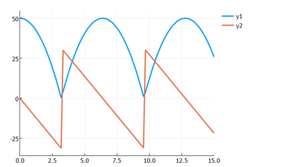

DifferentialEquations建模方法
Contents：建模、DE
Contributor: YJY
Email:522432938@qq.com
如有错误，请批评指正。
DE = DifferentialEquations.jl
DifferentialEquations.jl为处理时间微分的求解建模工具包。
浅谈建模内涵
在研究各类系统时（上至电力、能源系统、交通系统，下至RC电路、水利管网系统），当我们需要对系统进行处理时，我们都会一件相同的事情——把系统抽象成我们能够处理的对象！
从发现问题到获得计算结果，在现代计算科学中一般分为两步：
- 把问题抽象可量化、可处理的数学问题
- 把数学问题设计成可用计算机处理与计算的可计算问题
在这个过程中，大脑在这个过程充当了“解释器”的角色。把实际的问题层层抽象，最后让问题变得可计算。不得不感叹，人类“编译”能力之强大。也许人类在计算速度上远远不及计算机。但在深度与广度层面，远远超过计算机。
从前牛顿等巨人的时代开始，科学家研究的主体内容，主要是是第一步的内容。近40年，计算机科学技术呈爆炸式增长。依托于计算机，社会生产的智能化日益提高。于是基于第2步的问题也发展出许多学科分支，作为科研领域重要的方向之一。
这是一件很奇妙的事情，巨量1与0的加减运算产生了无穷的能力！就好像神经元虽然简单，只要数量够，也能组合成产生无数想法的大脑！
言归正传，在第一步中，描述对象的数学形式有微分方程（组）、代数方程（组）、图等等。针对对象进行计算的数学形式有求解方程问题、寻优问题、计算图等等。DifferentialEquations.jl就是处理基于时间微分的微分方程（组）求解软件包！
DE使用实例
现有洛伦兹方程为例：
\[\frac{dx}{dt} = \sigma(y-x) \\ \frac{dy}{dt} = x(\rho-z)-y \\ \frac{dz}{dt} = xy - \beta z\]
微分方程在DifferentialEquations.jl中含有5个要素：
- 方程描述
- 求解时间域
- 初值（边界条件）
- 方程参数
- 问题类型
在方程定义中，有4个参数：
function lorenz!(du,u,p,t)
du[1] = p[1]*(u[2]-u[1])
du[2] = u[1]*(p[2]-u[3]) - u[2]
du[3] = u[1]*u[2] - p[3]*u[3]
end其中，
- du为微分变量向量
- u为变量向量
- p为参数
- t为时间变量
剩下要素的定义：
p = [10.0,28.0,8/3]
u0 = [1.0;0.0;0.0]
tspan = (0.0,100.0)
prob = ODEProblem(lorenz!,u0,tspan,p)其中，
- p为参数
- u0变量的初始值
- tspan为求解时间域
- prob为通过方法ODEProblem()定义的ODE问题
ODEProblem = Ordinary Differential Equations Problem(常微分方程)
\[\begin{array}{l} \frac{d x}{d t}=\sigma(y-x) \\ \frac{d y}{d t}=x(\rho-z)-y \\ \frac{d z}{d t}=x y-\beta z \end{array}\]
除此之外，还有：
DAEProblem = Differential Algebraic Equations Problem（微分代数方程）
\[\begin{aligned}\frac{d y_{1}}{d t} &=-0.04 y_{1}+10^{4} y_{2} y_{3} \\\frac{d y_{2}}{d t} &=0.04 y_{1}-10^{4} y_{2} y_{3}-3 * 10^{7} y_{2}^{2} \\1 &=y_{1}+y_{2}+y_{3}\end{aligned}\]
DDEProblem = Delay Differential Equations Problem（随机微分）
\[\begin{aligned} d x_{0} &=\frac{v_{0}}{1+\beta_{0}\left(x_{2}(t-\tau)\right)^{2}}\left(p_{0}-q_{0}\right) x_{0}(t)-d_{0} x_{0}(t) \\d x_{1} &=\frac{v_{0}}{1+\beta_{0}\left(x_{2}(t-\tau)\right)^{2}}\left(1-p_{0}+q_{0}\right) x_{0}(t) \\&+\frac{v_{1}}{1+\beta_{1}\left(x_{2}(t-\tau)\right)^{2}}\left(p_{1}-q_{1}\right) x_{1}(t)-d_{1} x_{1}(t) \\d x_{2} &=\frac{v_{1}}{1+\beta_{1}\left(x_{2}(t-\tau)\right)^{2}}\left(1-p_{1}+q_{1}\right) x_{1}(t)-d_{2} x_{2}(t)\end{aligned}\]
更多方程种类可查官方文档。
求解并画图
sol = solve(prob, Tsit5())
plot(sol,vars=(1,2,3))
全部代码：
using DifferentialEquations,Plots
function lorenz!(du,u,p,t)
du[1] = p[1]*(u[2]-u[1])
du[2] = u[1]*(p[2]-u[3]) - u[2]
du[3] = u[1]*u[2] - p[3]*u[3]
end
p = [10.0,28.0,8/3]
u0 = [1.0;0.0;0.0]
tspan = (0.0,100.0)
prob = ODEProblem(lorenz!,u0,tspan,p)
sol = solve(prob, Tsit5())
plot(sol,vars=(1,2,3))DE的Callback特性
Callback的含义为，当系统运行到某个状态时，人为介入改变系统参量的值，随后继续求解。
下面以弹球系统为例，介绍Callback的用法。
弹球系统的特点是，当弹球碰到地面时，需要弹起。所以在模拟弹球系统时，需要考虑求解过程中速度的方法变化，这时候就用到callback。碰地的数学的描述为，弹球速度变量变为它的相反数。也就是说当弹球高度$x$变为0时，速度$u$需要变成$-u$。
其数学表达为：
\[x' = v \\ v' = -g\]
DE问题构建：
function f(du,u,p,t)
du[1] = u[2]
du[2] = -p
end其中，
- u1为x，即弹球高度
- u2为v，即弹球速度
建立Callback函数：
function condition(u,t,integrator) # Event when event_f(u,t) == 0
u[1]
end
function affect!(integrator)
integrator.u[2] = -integrator.u[2]
end
cb = ContinuousCallback(condition,affect!)condition为系统调用callback时应该满足的条件，默认为函数返回值为0（false）时的情况。即u[1]=0。 affect!为系统调用callback时的处理动作，这里为将速度变负。
定义剩余要素并求解，在solve中需要传递callback。
u0 = [50.0,0.0]
tspan = (0.0,15.0)
p = 9.8
prob = ODEProblem(f,u0,tspan,p)
sol = solve(prob,Tsit5(),callback=cb)
plot(sol)可以得到如下结果：

如果考虑反弹损失（每次反弹速度损失20%）：
function affect!(integrator)
integrator.u[2] = -integrator.u[2]*0.8
end
也能够得到相应的结果，妙啊！！！
全部代码：
using DifferentialEquations,Plots
function f(du, u, p, t)
du[1] = u[2]
du[2] = -p
end
function condition(u, t, integrator) # Event when event_f(u,t) == 0
u[1]
end
function affect!(integrator)
integrator.u[2] = -integrator.u[2]
end
cb = ContinuousCallback(condition, affect!)
u0 = [50.0, 0.0]
tspan = (0.0, 15.0)
p = 9.8
prob = ODEProblem(f, u0, tspan, p)
sol = solve(prob, Tsit5(), callback=cb)
plot(sol)DE中有许多特性，例如求解结果的处理（Solution Handle）、回调函数（Callback）等等。更多特性可以在官方文档中查看。